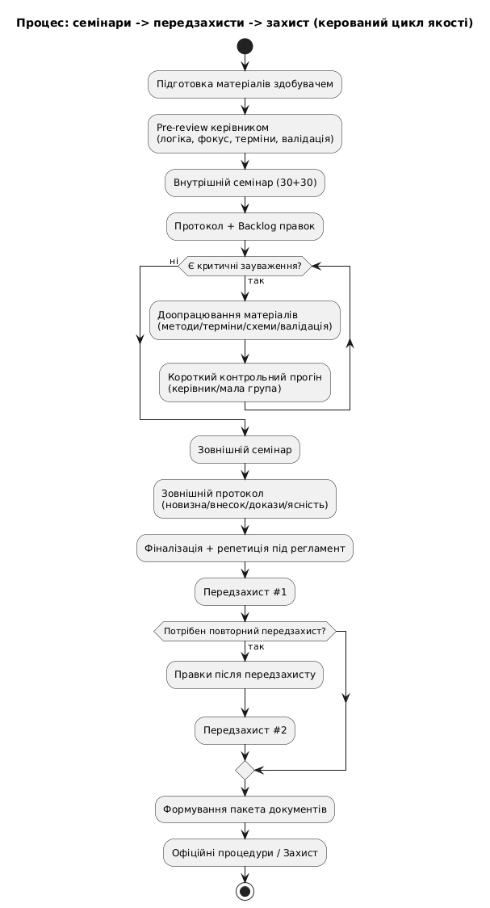

KNUBA KBKI research seminar: interim PhD review and transition plan toward the external seminar and pre-defenses
In brief
On 24 December 2025, the KBKI department at KNUBA held a research seminar in a 30+30 format (presentation + discussion). The goal was a technical review of readiness for the external seminar and the pre-defenses, with critical corrections captured inside a managed quality cycle.
The seminar was intentionally working in nature: 30 minutes of presentation and 30 minutes of questions. Colleagues from a similar department at Zhytomyr University joined the discussion online. This mix of audiences is useful: the internal community brings context depth, while external participants test clarity of argumentation, terminology discipline, and scientific correctness without the “habit effect.”
The seminar was not a ceremonial presentation of results. It was a quality checkpoint before the next stages — the external seminar and the pre-defenses. In that sense, it helps reveal weak points not through vague feedback, but through the pattern of repeated questions and recurring problem areas.
The supervisor’s role and readiness criteria
From the scientific supervisor’s role, seminars like this are treated as a quality-management tool for research. The object of assessment is not just the amount of material, but its structural integrity and reproducibility of conclusions. In practical terms, the review uses criteria such as:
- Problem framing and relevance. Is it clear what is being solved, why it matters, what is deficient in existing approaches, and where the task boundaries are?
- Positioning within prior work. Is the known separated correctly from the new? Is the scientific novelty and personal contribution clear?
- Methodology and terminology discipline. Are methods named precisely? Are abstraction levels kept separate? Does each term have a stable meaning across the text and presentation?
- Models, formulas, and assumptions. If a mathematical model is used, is it a formal object with explicit assumptions, parameters, interpretation, and application limits?
- Validation of results. Are claims supported by experiments, comparisons, theory, ablations, or control cases? Are success criteria defined clearly?
- Quality of visuals. Do diagrams and figures support the proof structure by showing inputs, outputs, interfaces, dependencies, and the location of the author’s own contribution?
Critical directions for improvement
The seminar discussion produced a list of areas that require structural strengthening. These are not cosmetic edits; they are the points most likely to draw the toughest questions at the next stages.
1) Stronger relevance and task argumentation
- Add a concise but focused review of directly relevant sources and approaches.
- State the deficit or unresolved problem in existing solutions explicitly.
- Connect the problem statement to the chosen metrics and success criteria.
2) Precision in method descriptions and applicability limits
- Replace generic language with operational descriptions: input → procedure → output.
- State assumptions and constraints explicitly.
- Avoid mixing high-level concepts with low-level implementation details in the same claim.
3) Terminology and abstraction levels
- Introduce a short terminology dictionary near the beginning.
- Align the levels clearly: processes / operations / algorithms / architecture / model / implementation.
- Fix the definitions of the key research objects and use them consistently.
4) Diagrams as part of the proof
- Each diagram should have a caption explaining why it is present.
- Inputs, outputs, and links between blocks must be explicit.
- The author’s own contribution — block, relation, or modification — should be visible.
5) Validation, calculations, and criteria
- Define metrics and success criteria clearly.
- Add control comparisons or control cases.
- Describe experiment and verification design explicitly.
- For mathematical sections: assumptions → derivation → interpretation → verification.
6) Focus and internal consistency
Secondary concepts that do not support the main problem create scientific noise and reduce trust in the work. The material should be reduced to what directly strengthens the main axis of the research.
Next steps: external seminar → pre-defenses
After the internal seminar, the next step is the external seminar. Its function is an independent check of three things: clarity of problem framing, terminology discipline, and sufficiency of validation. An outside audience usually reveals understanding issues that remain invisible inside the home department.
After that comes the pre-defense stage. At that level, requirements become formalized: novelty, personal contribution, correctness of methods and proofs, completeness of materials, and readiness for a regulated presentation. It only makes sense to move there once critical remarks are closed and terminology is stable.
Organizational principle: a managed quality cycle

- Record remarks in a protocol.
- Prioritize edits (critical / desirable).
- Update text, slides, diagrams, and validation sections.
- Re-check the material at the next stage.
This is how research is gradually raised to a level that can withstand professional criticism at the external seminar, the pre-defenses, and the final defense itself.